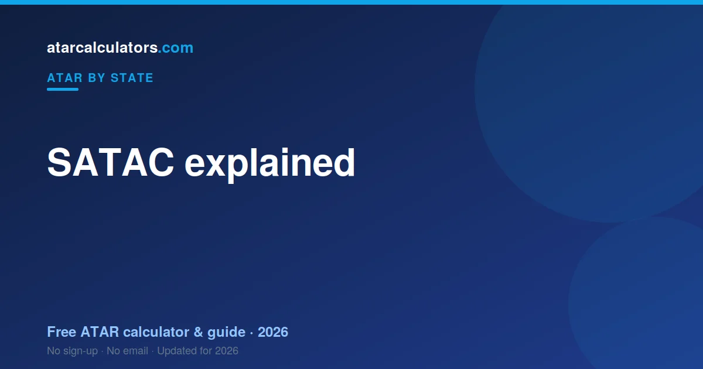

SATAC, the South Australian Tertiary Admissions Centre, scales SACE results, calculates the ATAR and manages university applications for both South Australia and the Northern Territory. The SACE Board sets and assesses the courses and awards the SACE; SATAC then scales those results, adds your best subjects into a university aggregate, and ranks it into an ATAR. Because SA and NT both use SATAC, their ATARs are directly comparable.
Key takeaways
- SATAC is the South Australian Tertiary Admissions Centre.
- It calculates the ATAR for both SA and the NT.
- It scales SACE results and runs university applications.
- The SACE Board sets and marks the courses and awards the SACE.
- Your ATAR comes from a university aggregate of your best scaled subjects.
- SA and NT ATARs are directly comparable, because both use SATAC.

What is SATAC?
SATAC stands for the South Australian Tertiary Admissions Centre. It is the organisation that processes tertiary admissions and calculates the ATAR for students in South Australia and the Northern Territory.
In most states there is a central admissions centre that turns senior-school results into a university rank. For SA and the NT, that centre is SATAC. It sits between your SACE results and your university offer.
So when SA or NT students ask who works out their ATAR and where their university offers come from, the answer to both is SATAC.
What does SATAC do?
SATAC has two main jobs. First, it takes your SACE results, scales them, and calculates your ATAR. Second, it manages the university and TAFE application and offer process for South Australia and the Northern Territory.
On the ATAR side, SATAC scales your Stage 2 subject results, adds your best subjects into a university aggregate, and ranks that aggregate into an ATAR. On the applications side, it collects your preferences and makes offers on behalf of the institutions.
So SATAC is both the calculator of your rank and the gateway to your offers, across two territories.
SATAC vs the SACE Board
Students often confuse SATAC with the SACE Board, but they do different things. The SACE Board of South Australia sets the SACE subjects, oversees the assessments, and awards the SACE certificate.
SATAC comes after. It takes the results the SACE Board produces, scales them, and turns them into an ATAR, then handles applications. In short: the SACE Board runs the courses and assessments; SATAC turns the results into an ATAR and an offer.
So the two bodies are a relay. The SACE Board hands over your assessed results, and SATAC converts them into the rank universities use. They are separate organisations with separate roles.
Why SA and NT share SATAC
The Northern Territory does not run its own separate senior certificate or admissions centre. NT students study the SACE, the same certificate as South Australia, so it makes sense for the same body to handle both.
Because both territories use the SACE and SATAC, their students are scaled and ranked the same way. This is why a SA ATAR and an NT ATAR are produced by an identical process.
So sharing SATAC is not unusual; it reflects that SA and the NT share the same curriculum. One system serves both, which keeps their results consistent.
How SATAC scales your results
SATAC scales each Stage 2 subject so that a score in one subject is comparable to a score in another. Scaling reflects how strong the students taking a subject are across all their subjects, not how hard the subject feels.
A subject scales up when its students are strong across the board, and down when the cohort is broad. This keeps the ATAR fair, so your rank does not depend on which subjects you happened to choose. See how scaling works.
The result is a scaled score for each of your subjects. Those scaled scores, not your raw marks, are what SATAC uses to build your aggregate and ATAR.
The university aggregate
Once your subjects are scaled, SATAC combines your best scaled results into a university aggregate. The aggregate is drawn from a set amount of your strongest Stage 2 study, so your best subjects carry your result.
Your compulsory Research Project can contribute to this aggregate, alongside your Tertiary Admission Subjects. Because only your best results count, attempting a broad program does not penalise you; SATAC uses the combination that works most in your favour.
So the aggregate captures your strongest scaled subjects. The higher your aggregate, the higher your ATAR, since the ATAR is your aggregate expressed as a rank.
From aggregate to ATAR
The final step is turning your aggregate into an ATAR. SATAC ranks every student’s aggregate and expresses your position as an ATAR, a number up to 99.95 that shows the percentage of students you finished above.
So an ATAR of 80 means you finished ahead of about 80 percent of the relevant age group. The ATAR is a rank, not a mark, which is why it can differ from your raw scores.
This national rank is what universities across Australia use, so a SA or NT ATAR is directly comparable to an ATAR from any other state.
Are SA and NT ATARs the same?
Yes. Because SA and NT students both study the SACE and are ranked by SATAC through the same process, a SA ATAR and an NT ATAR mean exactly the same thing. Neither is easier or harder to earn than the other.
And since the ATAR is national, both are also directly comparable to ATARs from every other state. An 85 from the NT, an 85 from SA, and an 85 from anywhere else all represent the same rank.
Applications and offers
Beyond calculating your ATAR, SATAC runs the application process for universities and TAFEs in South Australia and the Northern Territory. You list your course preferences through SATAC, and it makes offers on behalf of the institutions in rounds.
You rank your preferences in order, and SATAC matches you to the highest preference you qualify for. So it is worth ordering your choices carefully, with your genuine first choice at the top and realistic options below.
So SATAC is your single point of contact for applying to most SA and NT institutions, rather than applying to each one separately.
Interstate and other students
SATAC also handles applications from students who did not study the SACE, including interstate and international applicants. An ATAR earned in another state is recognised, since the ATAR is national.
If you studied elsewhere and want to apply to a SA or NT institution, SATAC is still the body you go through. Your existing ATAR or qualification is assessed for entry, and offers are made the same way.
When SATAC releases results
SATAC releases ATARs in mid-to-late December, shortly after SACE results are available, with the exact date confirmed closer to the time. University offers follow in rounds, with the main round in January.
So results day and offers are separate moments: your ATAR in December, then your offer in the new year. See the SA ATAR release date guide for what to expect on the day.
Estimate your SA ATAR
You do not have to wait for SATAC to get a sense of your ATAR. Our SACE ATAR calculator applies scaling to your Stage 2 scores and estimates your ATAR, so you can plan ahead.
It is a useful way to see how your best scaled subjects come together, and to test how different results would change your rank. For how the calculation works in full, see how ATAR is calculated in SA.
Common questions
Does SA use SATAC?
Yes. SATAC, the South Australian Tertiary Admissions Centre, scales SACE results, calculates the ATAR and manages university applications for South Australia. It also does the same for the Northern Territory.
Is a SA ATAR equivalent to a NT ATAR?
Yes. SA and NT students both study the SACE and are ranked by SATAC through the same process, so their ATARs mean exactly the same thing. Both are also comparable to ATARs from every other state, since the ATAR is national.
Why do SA and NT share SATAC?
Because NT students study the SACE, the same certificate as South Australia. Since both use the same curriculum, the same body scales and ranks their results, which keeps the two territories’ ATARs consistent.
Who sets SA exams?
The SACE Board of South Australia sets the SACE subjects, oversees the assessments and awards the SACE. SATAC comes after, scaling those results into an ATAR and handling applications. They are separate bodies.